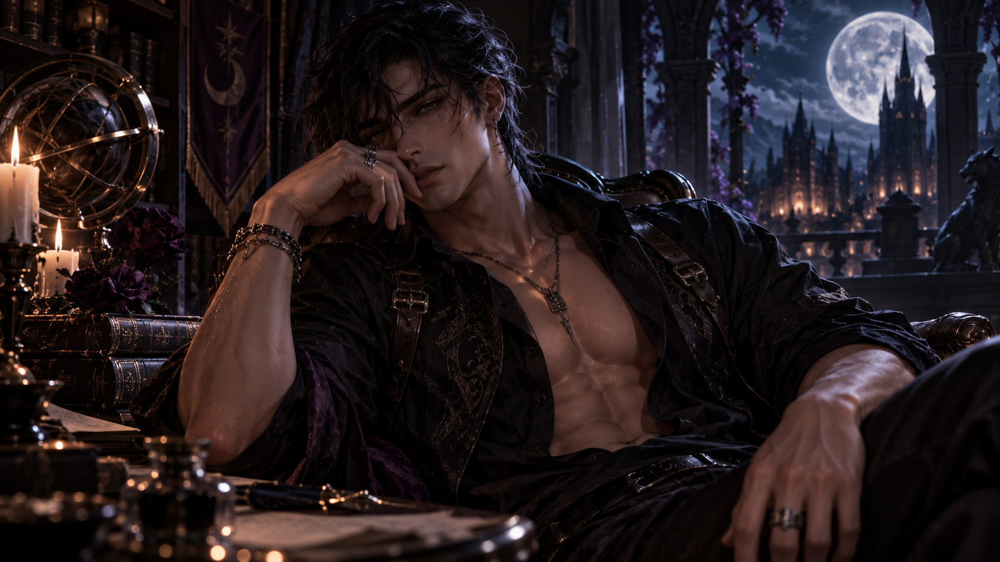
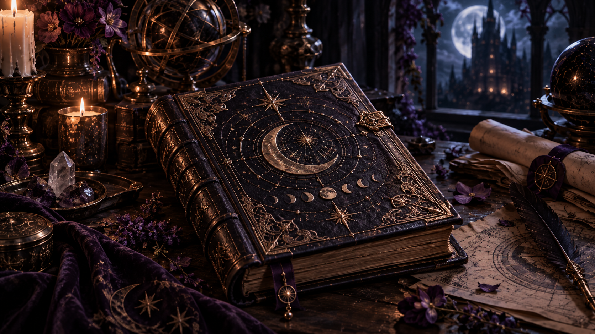

FANTASY ROMANCE RPG
Moonbourne Claim of the Alpha
A fantasy romance RPG where relationships are systems, choices carry consequences, jealousy matters, and every route is built to feel earned.
Enter MoonbourneCHARACTER · STORY · ROMANCE · WORLDS
Stories that refuse to fade.
A collection of characters, worlds, interactive romance, creator resources, and the systems used to build them.
THE HEART OF THE RELIQUARY
The Reliquary is built around interactive romance game development and AI character creation—different formats shaped by the same belief: compelling characters create unforgettable stories.
FANTASY ROMANCE RPG
A fantasy romance RPG where relationships are systems, choices carry consequences, jealousy matters, and every route is built to feel earned.
Enter Moonbourne
PAID CREATOR PARTNERSHIP
Character design built around compelling fantasy, strong openings, believable behavior, relationship progression, and characters made to sustain a story.
Explore Fizzz Creation
THE CREATOR'S GRIMOIRE
The same foundations that make a compelling AI character can build stronger romance routes, NPCs, interactive fiction, and game relationships.
The Grimoire breaks that process into concept, character, relationship, tension, behavior, progression, world, Markdown, openings, model direction, presentation, and platform translation.
Open the GrimoireEXPLORE THE ARCHIVE